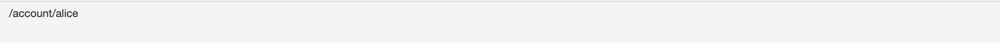
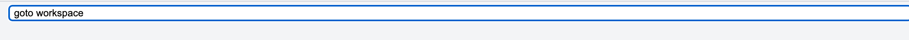
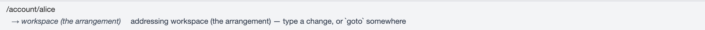
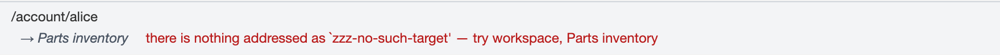
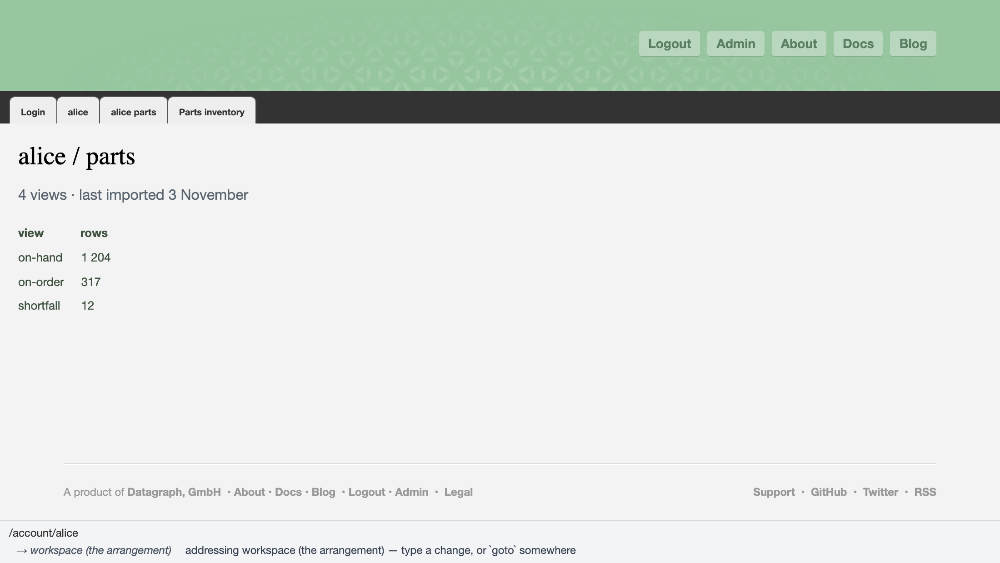
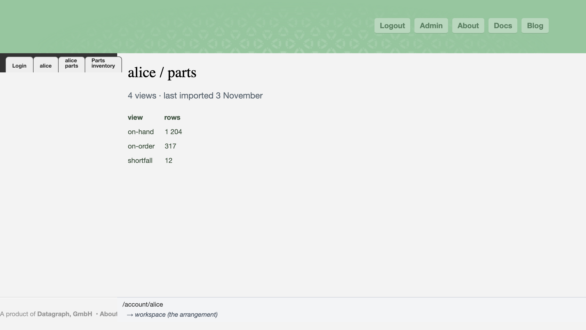
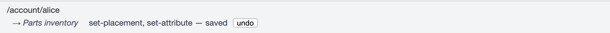
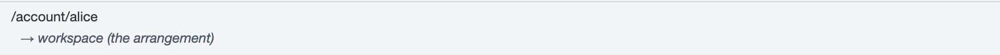
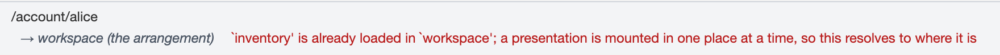

Contents
- What arrangement is
- Before you begin
- The bar: five things a line can be
- Addressing: what a sentence will change
- Asking for an arrangement
- What comes back
- The four arrangement verbs
- The bands
- Vocabulary: the operations
- Vocabulary: the components
- What is refused, and why
- Getting back
- Sentences to try
- Appendix A — every operation
- Appendix B — the messages
- Appendix C — how the figures were made
1. What arrangement is
The interface's own layout is a document, held in your account like any other. Arrangement is changing that document by typing a sentence into the location bar. A model turns the sentence into a patch; the interface applies the patch, or refuses it, and saves the result for your account.
There is a second way in, and it does not go through a model.
Four verbs — lift, apply,
mount and unmount — are read by the bar itself and
carried out exactly. They are how a component is kept under a name and put
somewhere else, and how a whole presentation is included in another. They are
§7.
Two things follow from the layout being a document, and they are what make this safe enough to experiment with:
- Nothing is overwritten. Every change is a new revision. Putting an arrangement back is a write of the old one, not a rewind.
- There is a way out that does not go through the
interface.
?workspace=defaulton the URL renders the arrangement this build shipped with, without reading yours.
2. Before you begin
The key is held in this browser for the life of the page, exactly as your host token is. It is never written to a repository, and a reload asks again.
Changed 8 November 2026. The connection used to belong to a repository: it was set in an exploration pane, held per repository, and the bar had no key of its own but borrowed whichever pane had one. A credential is a property of you and your provider, not of the thing you are looking at.
This step is for sentences. The four verbs of §7 need no model and no key, and work in a session that has neither.
<account>/ui, is created on the first save and not before.
A reader who never rearranges anything never acquires one.3. The bar: five things a line can be
The bar is at the foot of the window. It shows where you are; clicking it turns it into an input.

Figure 1: the bar at rest. It shows the path, not an input.

Figure 2: clicking the path opens the input, with the caret already in it.
What you type is read without asking a model, by a grammar with five cases:
| You type | It means | Example |
|---|---|---|
a path, a URL, ? or # |
navigate | /account/alice |
goto + a path |
navigate — the same thing, said out loud | goto /account/alice |
goto + a name |
re-address: choose what instructions act on | goto workspace |
| one of four arrangement verbs | arrange, exactly — carried out by code, no model asked | mount inventory |
| anything else | instruct the thing being addressed | put the tabs down the left |
| anything else that names a repository | ask about the data in it — see §5.1 | how many open orders in sales |
workspace on its own is
an instruction; goto workspace is how you address it. And a
sentence with a slash in it is still a sentence — put the chart 2/3 of
the way across is not a URL. A verb must match the whole line, so
mount inventory is a verb and mount the chart beside the
table is prose.
4. Addressing: what a sentence will change
An unprefaced line acts on whatever the bar says it is addressing, and the bar says so before you press Enter rather than after.

Figure 3: after goto workspace. The chip
on the left is what the next sentence will change.
There are two kinds of thing to address:
| Kind | What it is | How it gets there |
|---|---|---|
| workspace | the interface's own layout — the subject of this manual | always available, always first in the list |
| presentation | a generated page open in a pane | registered when the pane has a document; clicking into a pane addresses it |
Names are matched exact first, then by prefix, then by substring. An ambiguous name is refused rather than guessed, because re-addressing to the wrong thing silently would make the next sentence act on something you did not mean.

Figure 4: a name that matches nothing. The refusal lists what there is, and the previous address is kept.
5. Asking for an arrangement
Address the workspace and type what you want in your own words:
goto workspace
put the tabs down the left-hand sideThe interface asks the model for a patch, applies it, checks it, and saves it. Below is the chrome before and after exactly that instruction. Both figures are rendered by the interface's own layout code; the second is the result of the operation the model returned, applied by the real patch engine.

Figure 5: the arrangement this build ships with — one column, bands in reading order, the bar at the foot.

Figure 6: after the instruction. One operation moved the tabs into a 220px left-hand column; the content, footer and bar follow the new template.
The whole change is one operation on one element:
[{"op": "set-layout", "element": "w-chrome",
"value": {"columns": "220px 1fr",
"rows": "auto auto 1fr auto",
"areas": ["flashes flashes",
"header header",
"tabs content",
"footer location"]}}]That is the shape of nearly every arrangement: the bands already know which area they occupy, so rewriting the template moves all of them at once. A patch that moves each band separately is a patch that has misunderstood the problem.
5.1 Asking about data, in the same bar
The bar takes a question about a repository as readily as an instruction about the interface. Name the repository and ask:
how many open orders are there in sales
compare revenue across sales, orders and bob/partsA repository can be named three ways, and all three are things already on
your screen: a bare name after one of a few words — in, from,
across, against, on, within, about,
of — an account/repository pair, or a URL of either form
the interface links to. You may name as many as the question needs; they do
not have to belong to the same account, and a repository you reach through
collaboration counts.
Nothing runs when you press Enter. The bar answers with the stores the question would read and waits for one press:
reads alice/sales, alice/orders and bob/parts — 3 repositories
— under your credentials, nothing has run yet [Ask across 3]Press it and the model is asked, with one tool per repository: it chooses which store each call goes to, each call is sent to that repository's own endpoint under your own credentials, and each repository keeps its own exploration. The answer appears under the bar, folded away behind show, with the model that produced it, the stores it read and the date beneath it.
Before you press, show tells you what the press authorises — not only which repositories, but how long it may go on for and how much it may read:
This would run an analysis across 2 repositories:
· james/finto
· james/fibo
Up to 26 rounds of tool calls, 78 calls in all, read-only, for this run.
Large results are read as their shape first; the answer is recorded in
`james/mcp` and can be stopped while it runs.5.2 A question that takes minutes
A question about one repository answers in seconds. A comparison across two is a different animal: each store has to be inventoried before anything can be compared, so the turn is tens of calls and may run for minutes. Three things follow, and you will see all three.
It says what it is doing. The reply line keeps changing while the run goes on — which store it is asking, which operation, and how far into its rounds it is:
james/finto · catalog… (round 2 of 26)
james/fibo · 3 calls answered (round 4 of 26)
james/finto · 65016 rows — reading its shape (round 5 of 26)
writing it up…That third line is worth knowing about. A result too large to read whole reaches the model as its shape — how many rows, of what form — and it asks for the whole of the one or two whose values its argument actually turns on. Without that, one listing from a large vocabulary would be the entire conversation.
You can stop it. A stop sits beside the line. Pressing it does not cancel the call that is already out: that one is allowed to come back and be recorded, because the store has already done the work. Nothing further is sent. A stopped run says it was stopped — it does not present what it had as an answer — and hands you the prose it had reached.
It is kept. The run is written into your own
<account>/mcp repository as RDF, one record per store, each
holding that store's own calls together with the question and the answer. The
panel under the bar is transient; that record is not. There is a
copy beside show for the version you want in your own
document.
A worked example, captured against two live repositories, is in An analysis across two repositories.
6. What comes back
The bar answers in place, under the path. A change that was applied names the operations and offers an undo beside them.

Figure 7: a change applied to a presentation, with the undo the bar offers beside it.

Figure 8: the defect as it was — the bar immediately after the instruction in §5 succeeded, address kept, reply and undo lost. Kept as the record of a fixed fault; today the reply is there.
7. The four arrangement verbs
Everything so far goes through a model. Four lines do not. They are read by the bar itself, matched exactly, and carried out by code — no turn, no key, no budget, nothing to interpret:
| Type this | It means |
|---|---|
lift presentation#element as name |
keep one component of a page, with the requests behind it, under a name |
apply nameapply name into element |
put a kept component into the thing being addressed |
mount presentationmount presentation into element |
include a whole presentation, as itself |
unmount element |
take an included presentation out again |
They act on whatever the bar is addressing (§4), exactly as a sentence does.
Each matches the whole line and each name is checked against a
shape: a presentation or arrangement name is a letter followed by up to 63
letters, digits, - or _; an element anchor is a
lower-case letter followed by one to 63 lower-case letters, digits or
-. In a lift the element after the # may also
be written the long way, as //*[@data-ui='e-7k2m'];
apply and unmount take the short form only.
mount inventory is a verb;
mount the chart beside the table is prose and goes to the model,
because the text after the name is not consumed and the line therefore
fails to match. If you meant the verb and got a turn, the name had a
character the shape does not allow — or there was something after it.
Which verbs a target takes
Not every target offers both channels, and the two absences read differently:
| Addressed | Takes | Does not |
|---|---|---|
| the workspace (the chrome) | mount, unmount, apply |
lift is accepted and then refused by whatever it
names: the six bands are host elements and a host is
opaque — `w-tabs' is a `host' element: it is opaque, and an
arrangement cannot be lifted from inside one |
| a presentation (a page in a pane) | lift, apply |
mount and unmount, and the refusal says
where to go: a presentation is mounted in the workspace, not
in a page: the band is drawn and opened by the chrome, and this
page is in a frame with nothing to register a renderer in —
`goto workspace' and mount there |
A target that offers neither says so in its own words: … cannot be rearranged from here. A pane with nothing open in it answers there is no page in this pane yet.
lift — keeping a component
A lift names one element of one page and writes it into
<account>/ui under a name you choose. What is kept is not a
picture: it is the element's subtree with every minted name replaced by a
placeholder and every order key dropped, plus every request,
transform, assertion and parameter that subtree referred to, plus the
account and repository each request will be repeated against.
So lift parts#e-7k2m as stock-card answers
lifted as `stock-card' — 2 request(s) it will repeat, against
alice/parts. The presentation half of the name is not decoration: an
element name is unique within a presentation and not within a rendered page,
which composes several. Naming the wrong page is refused with the right form
spelled out.
Two refusals are worth knowing before you meet them. A whole
presentation cannot be lifted — `inventory' names a whole
presentation; a whole presentation is mounted, not lifted — and an
opaque element cannot be lifted from: html and
host elements have no inside the arrangement machinery can read.
Undoing a lift is forgetting it; nothing on the page changed, because a lift
is a read.
apply — putting it somewhere
An apply re-mints every element name, merges the kept definitions into the destination, and writes it as one patch: one revision, one undo. Two details decide what you actually get:
- A parameter the destination already defines the same way is
shared, not copied. Two components bound to one parameter are two
views of one value — which is what moving a slider is expected to do. A
parameter that collides but differs is a refusal, not a merge —
`…' is a kind here and a kind in the arrangement; applying it would bind the request to a different parameter. - A request name that is already taken is minted afresh, not reused. Reusing it would quietly point the applied component at this page's data, and an arrangement is a recipe — a recipe that changes ingredients is a different dish.
An applied component arrives with definitions and no content.
It repeats its requests, against the sources the lift recorded, under
your credentials. That is why applying to a page does not apply
anything at first: the pane shows a disclosure — every request, the
account/repository it goes to, the query text, what it is bound
to, and the sentence These run under YOUR credentials, against the
addresses above. The author chose where; you supply the token. Nothing
runs until you press Apply and run N requests. The bar's reply says
where it went: `stock-card' — 2 requests to repeat, waiting for you in
the pane.
mount — including a whole presentation
A mount is the other kind of inclusion, and it is the one that keeps identity. No lift, no template, no re-minting: the mounted presentation keeps its own graph and its own element names, and an edit through the mount is a new revision of the source. That is the difference from apply in one sentence — an applied component's edits belong to the page that applied it; a mounted presentation's edits belong to the presentation.
Three rules follow from that, and each is a message you will see:
- One place at a time. Two mounts of one presentation would put identical element names into one page, which is a certain collision rather than a risk. The second is refused and tells you where the first is.
- A workspace is never mounted —
a workspace arranges the interface's own bands and there is one of it. A page may be mounted in the chrome. The rule also permits a page inside another page — the shape a component library would take — but this interface does not offer it: a pane renders its page in a sandboxed frame with nothing to register a renderer in, so it refuses the verb and says where to go instead. - One element is not mounted —
names one element; a mount takes a whole presentation, and one element is lifted and applied instead.

Figure 9: the second mount of one
presentation. A refusal is returned before the chrome is redrawn, which is why
this reply survives when a successful one does not (§6).
A mounted presentation is drawn, not run. It arrives as an
inert band carrying one button, Open ‘name’, and nothing
draws it until you press that button. The press is the whole design: a mount
opens only by a person pressing it, so a page that mounts a page that mounts a
page is as deep as you have pressed and not one band deeper. Its elements are
drawn by this build's toolbox; its panels are not executed, so
anything bound to data draws empty. Filling it would mean spending your grant
on a page you have only just opened. apply is the verb that brings
a request with it, and it says so at a gate first.
unmount — and how a mount takes up a change
unmount element takes the band out and releases the
registry entry. It has its own verb for one reason: there is no
refresh. A mounted presentation that has since been revised reaches
its container only by being unmounted and mounted again. Nothing re-resolves
quietly in the background, and that is deliberate — a page whose contents
changed because somebody else edited something is a page nobody can reason
about.
mount, unmount and apply against the
workspace redraw the chrome before the bar writes its
reply, and until 8 November 2026 the reply — and the undo beside it — went
into the bar the redraw had thrown away. lift redraws nothing
and always reported. All four now report against either target.
Where the names come from
Every verb takes a name you have to know. Open your account page and choose
Presentations, beside Repositories: it lists what
<account>/ui holds — every presentation with its scope and
where it is mounted, every arrangement with what it was lifted from and which
repositories applying it would read, and the component toolbox a generated page
may use. The buttons beside each row do not do anything of their own: they type
the verb into the bar and submit it, so a mount from the catalog and a mount
you typed are the same act, with the same reply and the same undo.
The listing says what cannot be done as well as what can. The
workspace presentation is offered no mount, because the chrome is
never mounted inside anything; a presentation already mounted somewhere is
offered unmount instead, because a presentation is mounted in one
place at a time; and a presentation belonging to another account is listed,
marked as theirs, and not offered a verb — the verbs take one token and resolve
it in your own interface repository.
A name that is not there is answered with the names that are. there is no presentation named `inventorie' — it may name `inventory', `orders': the refusal is issued by code that has just read the whole catalog, and since 8 November it says so.
8. The bands
The interface is six bands. Each is a host: it names a view the
build already draws. Arrangement decides where a band goes and never
what is inside it.
| Host | What it draws | Immutable | Required |
|---|---|---|---|
flashes | transient messages | no | no |
header | the logo and the top links | yes | no |
tabs | the pane tab strip | no | no |
content | the page you are on | yes | yes |
footer | the product links | yes | no |
location | this bar | yes | yes |
Immutable bands may not be removed, moved out of the
chrome, hidden, changed into something else, or left without an area in the
template. Required bands are the two the interface cannot be
repaired without: content, because otherwise there is nothing on
the screen, and location, because the bar is how you change the
arrangement back. An arrangement that somehow loses one of them is not used —
the build's default is drawn instead, with the reason on it.
Three things about bands that surprise people
9. Vocabulary: the operations
These are the six operations that address a part of a view. They are what an arrangement is made of. You never type them — the model writes them — but knowing them is how you phrase a request it can satisfy in one operation instead of six.
| Operation | What it changes | Use in the chrome |
|---|---|---|
set-layout |
an element's grid: columns, rows,
areas, gap |
the main one. Rearranging the whole interface is
one set-layout on w-chrome |
set-placement |
which area, column or row one element occupies | moving one band without disturbing the others |
set-attribute |
one attribute, or one of the element's own fields | style on a band takes effect; see the note below |
insert-element |
adds a child under a parent | accepted, but only a host is ever drawn |
remove-element |
deletes an element | accepted for a mutable band, but the band is still drawn, unplaced |
move-element |
moves an element to another parent | refused in practice — a host mounts a view and so may not take
children, and an immutable band may not leave
w-chrome |
The fields set-attribute can set, besides a component's own
attributes, are text, style, kind,
html, host, behavior,
default — and four that are refused in the workspace:
bound, derived, asserted,
binds. Those four are how an element shows data, and the chrome
has none to show.
10. Vocabulary: the components
The model is shown a catalogue of components it may put in a page. For the workspace the catalogue is capped at tier 1 — layout and text, nothing with a data contract — because a component bound to a panel in a document that declares no panels is a refusal waiting to happen.
| Component | Element | What it is | Properties |
|---|---|---|---|
grid | <dydra-grid> |
responsive columns for a page's own regions | columns (default auto), gap (12) |
stack | <dydra-stack> |
a row or a column with a gap | direction (row|column), gap (8),
align (start|center|end|stretch) |
split-pane | <dydra-split-pane> |
two regions and a divider the reader can drag | direction, ratio (0.5) |
panel | <dydra-panel> |
a bordered region with a heading | label, caption |
card | <dydra-card> |
a raised box that groups a region | — (a title slot) |
tabs | <dydra-tabs> |
local tabs inside one view | — (children carry label) |
text | <dydra-text> |
a paragraph of the page's own prose | emphasis (normal|muted|warn), size (small|normal|large) |
heading | <dydra-heading> |
a heading whose level is a property | level (2) |
metric | <dydra-metric> |
one figure shown large, with a label | label, value, unit,
digits, trend |
badge | <dydra-badge> |
a small coloured label | tone (neutral|good|warn|bad) |
key-value | <dydra-key-value> |
a list of properties | pairs — a property, never an attribute |
grid, panel, card and
metric; the rest are added when the request mentions them.
tabs, badge, key-value and
metric have trigger words — tab, side by
side, badge, status, properties,
total, count. stack,
split-pane, text and heading have
none, so the model is working from memory rather than from a manifest when
you ask for them. If one comes out wrong, name the component itself in
your sentence.
The remaining components — table, bar-chart,
line-chart, term, graph,
select, radio-group, checkbox,
button, text-input, text-area,
number-input, slider, date-input — are
tier 2. They exist for generated pages, which have data and parameters. They
are not offered for the workspace and an element that binds one is refused.
11. What is refused, and why
Every patch is sorted into one of four classes by what it changes. For a generated page, the stronger classes raise a gate and ask you. For the workspace there is no gate to raise, so anything but the weakest class is refused outright: a gate here would be asking you to authorise a query against a repository the interface never named.
| Class | What puts a change in it | In the workspace |
|---|---|---|
| presentational | layout, placement, style, text, titles, views | applied, no gate |
| computational | transforms, assertions, an element gaining
derived/asserted |
refused |
| data | panels, parameters, an element gaining
bound/binds, an unknown operation |
refused |
| authority | set-grant, set-repository,
set-budget, set-writable |
refused |
These are the refusals you will actually meet, each verified against the running code:
| What you asked for | What the bar says |
|---|---|
| remove the footer | refused whole: `w-footer' may not be removed |
a template that leaves out content |
refused whole: `w-content' sits in area `content', which `w-chrome' no longer declares — an element can be hidden by rewriting its container's template |
| hide the location bar | refused whole: `w-location' may not be hidden |
| show the open orders in the header | refused whole: the page binds `orders', which is not a panel |
| add a panel / a parameter / a transform | refused: the interface itself holds no data, and this would … |
| a wider grant | refused whole: `set-grant' asks for authority, which a patch cannot grant; it is a proposal for Gate 0, not an operation |
| put the tabs inside the flashes band | refused whole: view `main': element `w-flashes' mounts a view, so it cannot also have children; the proposal carries no html |
| move the footer out of the chrome | refused whole: `w-footer' may not be moved out of w-chrome |
Note the last line of defence in the second row. Rewriting the area template so that a required band has nowhere to go is a deletion wearing the costume of a layout change, and it is refused as a deletion.
12. Getting back
In order of how much you want to undo:
?workspace=default. Add it to the URL. The
interface renders the arrangement this build shipped with, without reading
yours. This is a query parameter and not a setting, deliberately: a setting
would live in the thing that may be broken, and a URL can be typed into a
browser that is showing nothing useful.?workspace=default shows you the default; it
does not save it. Your arrangement is still what loads
next time. To keep the default, rearrange from there and let the next
instruction save it.
13. Sentences to try
| Type this | Expect |
|---|---|
goto workspace |
the chip reads workspace (the arrangement) |
put the tabs down the left-hand side |
one set-layout; Figure 6 |
move the location bar to the top of the window |
applied — the bar is in flow, not fixed, so this really moves it |
make the content area wider and the tabs narrower |
one set-layout changing columns |
get rid of the footer |
refused: `w-footer' may not be removed |
hide the tabs |
accepted, and the tabs are still drawn — unplaced, at the end (§8) |
show me the open orders beside the content |
refused: the interface holds no data |
goto /account/alice |
navigation, not an instruction — the address is kept |
mount inventory |
a band appears with one button, Open ‘inventory’; nothing is drawn until it is pressed (§7) |
mount inventory again |
refused: already loaded in `workspace' — Figure 9 |
mount the chart beside the table |
not a verb: it goes to the model as prose |
unmount e-7k2m |
the band goes; there is no refresh, so this is also how a revised source is taken up |
lift workspace#w-tabs as strip |
refused: a band is a host and a host is opaque |
Appendix A — every operation
The patch protocol has twenty-three operations. Six address elements and are what arrangement uses; the rest address named parts of a document and are listed here so that a refusal naming one is legible.
The four verbs of §7 are not in this table and are not
patch operations. They are read by the bar, not written by a model, and what
they produce is a patch — an apply is one patch and one
revision, and a mount is a single insert-element of
a host.
| Operation | Class | Workspace |
|---|---|---|
set-layout, set-placement,
set-attribute, insert-element,
remove-element, move-element |
presentational, unless it adds a binding | accepted |
set-title, set-styles,
set-script, use |
presentational | accepted and stored — but the chrome renders bands only, so
styles and script on the workspace are
never read |
set-view, set-state |
presentational | accepted; little use — the chrome has one view per routed page |
set-slot, append-slot |
presentational | refused: `set-slot' addresses view `main' as markup, but its
markup is generated from its elements; address the element
instead |
remove-view |
presentational | refused when it would leave the page with no views, which in the chrome it always would |
set-panel, remove-panel,
set-parameter, remove-parameter |
data | refused |
set-transform, remove-transform,
set-assertion, remove-assertion |
computational | refused |
set-grant, set-repository,
set-budget, set-writable |
authority | refused — recognised only so that asking for authority reads as a proposal and not as a malformed answer |
Appendix B — the messages
| Message | What happened |
|---|---|
sign in before rearranging the interface |
no account is signed in |
no model is connected — set a provider key in the account's Connection settings; nothing was asked |
the account has no connection; every surface says this, in these words |
there is no presentation named `…' — it may name `…', `…' |
the name was not in the catalog, which the refusal then lists |
there is no arrangement named `…' — it may name `…' |
the same, for apply |
`…': a workspace presentation is the chrome itself; it is never mounted |
a mount of something whose scope forbids it |
`…' is not a repository this account may read — it may name … |
a prompt named a repository outside your own and your collaborations |
reads … — under your credentials, nothing has run yet |
a question about data, disclosed and waiting for the press |
the workspace names no repository, so there is nothing to read — name one in the line, as `in alice/sales' |
a question with nothing to ask it of |
addressing … — type a change, or `goto` somewhere |
the address was taken |
nothing is addressed — `goto …' first, or click into it |
a sentence with no target |
there is nothing addressed as `…' — try … |
the name matched nothing; the candidates are listed |
`…' names more than one thing: … |
ambiguous, and refused rather than guessed |
asking — … |
the turn is running; the input is disabled until it answers |
set-layout — saved |
applied and written. Not currently shown for the workspace (§6). |
the answer carried no patch, so nothing has been changed |
the model replied in prose; ask again, more concretely |
the answer ran out of room with the patch block still open — ask for a smaller change |
the answer hit its token ceiling mid-patch |
refused whole: … |
the patch did not survive validation; nothing was applied |
refused: the interface itself holds no data, and this would … |
the patch was valid but not presentational |
changed, but not saved: … |
applied on screen, the write failed; it will not survive a reload |
`…/ui' is not available: … |
the repository that holds arrangements could not be made or reached |
And the four verbs (§7):
| Message | What happened |
|---|---|
this interface cannot arrange anything here |
the addressed target offers no arrangement channel |
… cannot be rearranged from here |
the same, named: the target takes sentences but not verbs |
lifted as `…' — N request(s) it will repeat, against
account/repository |
the component was kept, with the requests behind it |
`…' names a whole presentation; a whole presentation is
mounted, not lifted |
the name carried no #element |
`…' is a `host' element: it is opaque, and an arrangement
cannot be lifted from inside one |
an html or host element has no inside to
lift from |
this page is `…'; `…' is something else — lift … |
the presentation half of the name is not the page you are on; the right form is spelled out |
`…' — N requests to repeat, waiting for you in the pane |
the apply was read and disclosed; nothing has run yet |
the arrangement names a … `…' that its source did not define,
so the component cannot be recreated here |
the lift could not resolve something the element referred to |
`…' is a kind here and a kind in the
arrangement; applying it would bind the request to a different
parameter |
a parameter name collides and the two are not the same parameter |
no source is recorded for `…', so there is nothing to repeat
the request against |
the lift recorded no repository for that request |
this arrangement is written against template form N; this
interface reads M |
the kept arrangement is from another build |
`…' is mounted — press Open in the band to draw it, which is
the only thing that can |
the mount was written. Not currently shown for the workspace (§6). |
`…' is already loaded in `…'; a presentation is mounted in one
place at a time, so this resolves to where it is |
the second mount of one presentation — Figure 9 |
a workspace cannot be mounted in a …: a workspace arranges the
interface's own bands and there is one of it |
the named presentation is the chrome's own |
`…' names one element; a mount takes a whole presentation, and
one element is lifted and applied instead |
a #element was given to mount |
there is no mount `…' here |
unmount named an element that is not a mount |
`…' is mounted here, but the registry says it is also in `…' —
one of the two is stale |
the mount was written but the claim was already held |
Appendix C — how the figures were made
Every figure in this manual is a screenshot of the interface's own code, not
a drawing. capture.mjs beside this file serves the repository to a
headless browser, renders the chrome with LayoutView from an
arrangement computed by arrangementOf, mounts the real location
bar, and applies the worked example with the real patch engine. To rebuild
them:
node doc/arrangement-manual/capture.mjsThe model is the one thing stubbed, and it has to be: a manual whose pictures depend on what a provider answered on the day is a manual that cannot be rebuilt. The stub stands exactly where the provider stands — the patch it returns is applied by the same code that applies a real one.
Figure 9 is the real mount from
lib/app/arrangement.js refusing a second mount: the harness
supplies the registry and the save, and the sentence in the picture is the
code's own. It is the one verb reply that can be photographed as it appears —
the successful ones against the chrome are swallowed by the defect in
§6, and a figure of a reply that nobody can see today
would be a figure of something that does not happen.
The tables in §9, §11 and
Appendix A were produced by running candidate patches
through runWorkspaceInstruction and recording what came back,
rather than by reading the source and inferring.